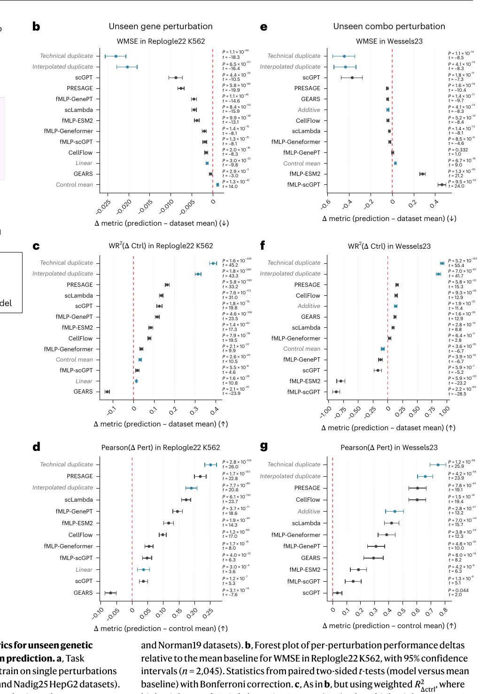
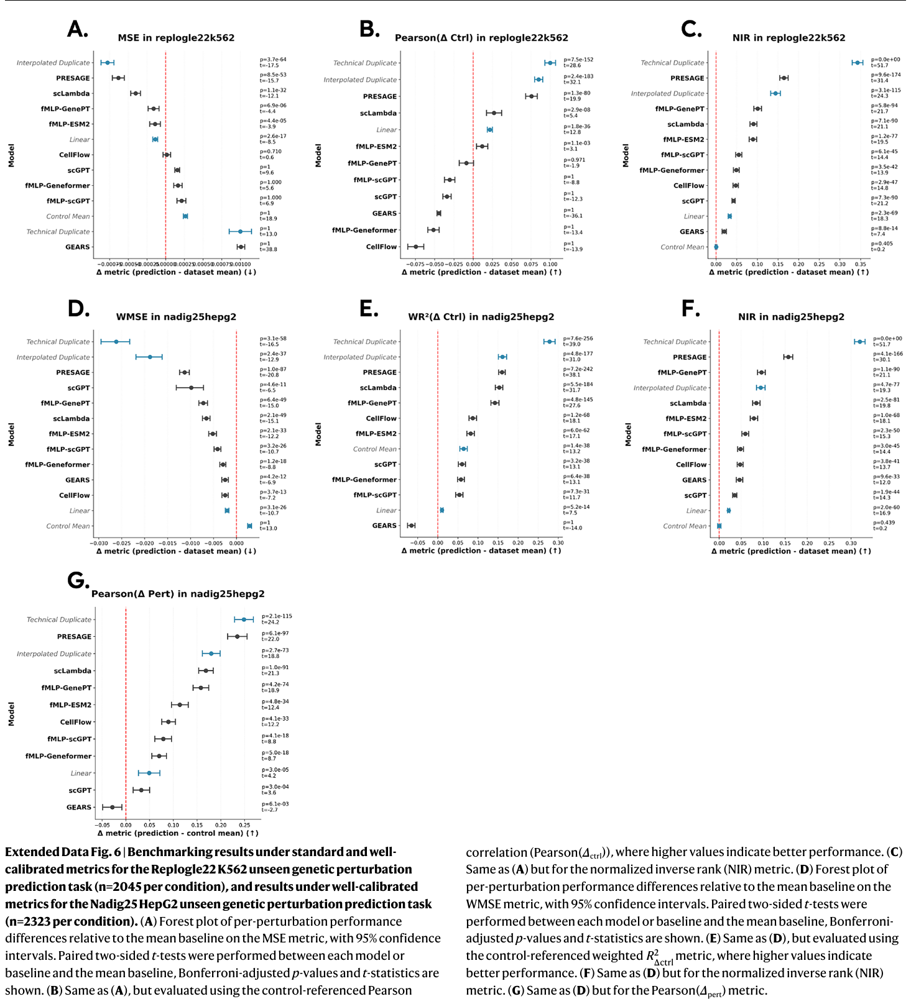
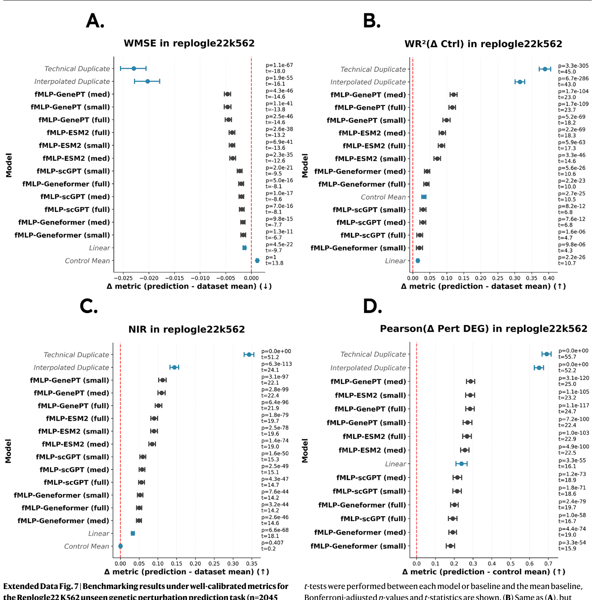

NOTES / OCTOBER 2026
扰动模型的 baseline 及性能报告
Miller 2026 的 18 项指标复现：HepG2 / K562 / Jurkat 上 Linear、Mean、GEARS、fMLP–Geneformer 与正负对照。
结论
模型排序与 Miller et al. 的 Figure / Extended Data 中官方 baseline 一致（完整对照见文内表与图）。
评测任务与指标。本复现覆盖未见单基因扰动三项数据集：HepG2（Nadig25）、K562（Replogle22）、Jurkat（Nadig25）；每项报告 18 个指标。主文排序重点看 Pearson(Δctrl) Pearson(Δctrl) 相对对照的 Pearson 相关 预测与真值相对对照基线的位移向量的相关系数；衡量方向与相对幅度。 公式与计算过程 · Miller 2026 与 NIR NIR 归一化逆秩（检索） 预测是否在欧氏距离上最近于正确扰动真值；反映全局扰动景观结构。 公式与计算过程 · Miller 2026 （文中 Fig. 2 另有未见组合 Wessels23，本复现未跑）。
未见单基因上的序：Pearson(Δctrl) Pearson(Δctrl) 相对对照的 Pearson 相关 预测与真值相对对照基线的位移向量的相关系数；衡量方向与相对幅度。 公式与计算过程 · Miller 2026 为 Linear > Mean > GEARS > fMLP–Geneformer；NIR NIR 归一化逆秩（检索） 预测是否在欧氏距离上最近于正确扰动真值；反映全局扰动景观结构。 公式与计算过程 · Miller 2026 为 fMLP ≳ GEARS > Linear ≈ Mean。HepG2 与 K562 四档齐全且成对顺序未翻转；Jurkat 无论文模型行，仅作同集内部对照。
现有指标
Miller et al. 用校准后的指标说明：深度模型在部分指标上可以打过无信息 baseline。以 Fig. 2b（K562，WMSE）为例，从矩阵到森林图的处理如下。
- 先变成扰动级向量（不是逐细胞比）。每个测试扰动把细胞对半：GT 半聚成真值伪批量 \(y\)，模型输出也是同维伪批量 \(\hat y\)（GEARS 等对抽样 control 取均值后再加扰动效应）。Mean 基线则是本折训练扰动伪批量的等权平均 \(\mu_{\mathrm{all}}\)。
- 每个扰动算一次 WMSE。用 GT 半相对「其余非对照扰动」做 t-test（overestim_var），对 \(|t|\) min–max 后再平方得基因权重 \(w_g\)（权重只来自 GT，避免泄漏）。然后 $$ \mathrm{WMSE}_i=\frac{\sum_g w_g(\hat y_g-y_g)^2}{\sum_g w_g}. $$ 对 Mean 用同一套 \(y,w\)，把 \(\hat y\) 换成 \(\mu_{\mathrm{all}}\)，得到 \(\mathrm{WMSE}_i^{\mathrm{Mean}}\)。
- Fig. 2b 画的不是绝对 WMSE，而是差值。每个扰动：\(\Delta_i=\mathrm{WMSE}_i(\text{模型})-\mathrm{WMSE}_i(\text{Mean})\)。WMSE 越低越好，所以 \(\Delta<0\)（点在 0 左侧）= 打过 Mean。图注 \(n=2045\) 就是这类成对差值的扰动数。
- 汇总成一行森林图。对所有 \(\Delta_i\) 取均值 \(\mu_\Delta\)；95% CI 用扰动级 bootstrap（文中 10,000 次）；再对「模型 vs Mean」做配对 t 检验（Bonferroni）。一点 + 横线 = 这一行的 \(\mu_\Delta\) 与 CI，不是五折先平均再画。
一句话：预测/真值矩阵 → 每扰动伪批量 → 每扰动 WMSE → 减 Mean 的 WMSE → 对扰动平均进森林图。下面三张原图（已裁切页眉页脚与英文长图注）对应主文 Fig. 2 与 Extended Data Fig. 6–7；完整印刷数字仍以 Supplementary Table 2 为准。



HepG2（Nadig25）
作者预处理 109,183×8,746；2322 非对照扰动。GEARS GEARS GEARS 0.1.2（原生） 每个数据集（HepG2 / K562 / Jurkat）独立五折训练与评分。 hidden 64；GO/Gene GNN 各 1 层；decoder 16；两图邻居 20；coexpression 阈值 0.4；10 epochs；batch 32；Adam lr=0.001；weight_… 本复现配置 / Mean Mean Dataset Mean（负对照） 训练扰动伪批量的等权平均；Miller 用作负对照。 对本折所有训练非对照扰动的 pseudobulk 等权平均，不按细胞数加权。Pearson(Δpert) 对自身未定义。 本复现配置 / Inter.Dup Inter.Dup Interpolated duplicate（正对照） TD 与 Mean 按 DEG 显著性逐基因插值；用于指标校准。 μ_ID = α ⊙ μ_TD + (1−α) ⊙ μ_all，α = 1 − P_DEG（仅用 TD 半独立 DEG）。弱扰动贴近 Mean，强扰动贴近 Tech.Dup。 本复现配置 / Control Control Control Mean（负对照） 对照细胞均值基线。 作者 ctrl_baseline。Pearson(Δctrl) 对自身未定义（预测位移为零向量）。 本复现配置 / Tech.Dup Tech.Dup Technical duplicate（正对照） 同扰动另一半细胞预测 GT 半；实验可及的上界。 固定 first_half=GT、second_half=TD；TD 不参与 DEG 权重，避免泄漏。 本复现配置 来自 GEARS 正式轮拼接；Linear Linear Ahlmann-Eltze Linear 伪批量 PCA（10 维）加岭回归 Y≈G W P。 PCA n_components=10，random_state=42；G_ridge=P_ridge=0.1。只给表达矩阵里出现的靶基因出预测，缺行不补零。HepG2/K562 非 DEG 12 项对齐 MOES… 本复现配置 、fMLP–Geneformer fMLP–Geneformer fMLP + Geneformer-V2-104M 冻结 Geneformer 词嵌入，其上训练 MLP probe；非动态 cell embedding。 嵌入来源：Geneformer-V2-104M 的 word_embeddings，作者 h5ad 内 20,271×768 静态查表；不微调 Transformer。网络：768→512→512→128（late… 本复现配置 来自各自 REPORT。与 Miller 文印刷表三位小数对照时，非 DEG 多项对齐；DEG 绝对分不对齐。
拼接 mean（全 18 项）
数字为 pooled mean。Tech.Dup / Inter.Dup 为正对照。 可评规模：Linear n≈2100 · Mean n≈2302 · GEARS n≈2302 · fMLP–Geneformer n≈2260 · Inter.Dup n≈2302 · Control n≈2302 · Tech.Dup n≈2302。
相对 Mean：GEARS GEARS GEARS 0.1.2（原生） 每个数据集（HepG2 / K562 / Jurkat）独立五折训练与评分。 hidden 64；GO/Gene GNN 各 1 层；decoder 16；两图邻居 20；coexpression 阈值 0.4；10 epochs；batch 32；Adam lr=0.001；weight_… 本复现配置 的 MSE +5.5%、WMSE −5.8%（16 项中胜 7）。相对 Miller 文印刷点：GEARS Pearson(Δctrl) −0.012、NIR −0.011。
K562（Replogle22）
GO 可评约 2029；Linear Linear Ahlmann-Eltze Linear 伪批量 PCA（10 维）加岭回归 Y≈G W P。 PCA n_components=10，random_state=42；G_ridge=P_ridge=0.1。只给表达矩阵里出现的靶基因出预测，缺行不补零。HepG2/K562 非 DEG 12 项对齐 MOES… 本复现配置 n=1855（仅表达靶）；fMLP–Geneformer fMLP–Geneformer fMLP + Geneformer-V2-104M 冻结 Geneformer 词嵌入，其上训练 MLP probe；非动态 cell embedding。 嵌入来源：Geneformer-V2-104M 的 word_embeddings，作者 h5ad 内 20,271×768 静态查表；不微调 Transformer。网络：768→512→512→128（late… 本复现配置 n=1986（all_embedded，剔除缺嵌入 58）。简报未单列 Tech/Inter 拼接行，故下表不含这两列。
拼接 mean（全 18 项）
GEARS 五折完成后四档齐全；排序与 Miller 文印刷表一致。 可评规模：Linear n≈1855 · Mean n≈2029 · GEARS n≈2029 · fMLP–Geneformer n≈1986 · Control n≈2029。
排序：Pearson Linear > Mean > GEARS > fMLP；NIR fMLP > GEARS ≈ Linear > Mean。MSE(DEGs) 上 Linear/Mean 差约 0.0002 互换，不算结构性翻车。
Jurkat（Nadig25）
Miller 文印刷表 无 Jurkat 的 Linear/GEARS/fMLP 行。下表为 Linear 报告中的共同支持集 n=2108（六模型同扰动）；fMLP–Geneformer fMLP–Geneformer fMLP + Geneformer-V2-104M 冻结 Geneformer 词嵌入，其上训练 MLP probe；非动态 cell embedding。 嵌入来源：Geneformer-V2-104M 的 word_embeddings，作者 h5ad 内 20,271×768 静态查表；不微调 Transformer。网络：768→512→512→128（late… 本复现配置 不在该 matched 表内，另列 all_embedded n=2283。
拼接 mean（matched n=2108）
同集公平比较；Inter.Dup / Tech.Dup 为正对照。 可评规模：Linear n≈2108 · Mean n≈2108 · GEARS n≈2108 · Inter.Dup n≈2108 · Control n≈2108 · Tech.Dup n≈2108。
fMLP–Geneformer（Jurkat，另口径）
fMLP–Geneformer fMLP–Geneformer fMLP + Geneformer-V2-104M 冻结 Geneformer 词嵌入，其上训练 MLP probe；非动态 cell embedding。 嵌入来源：Geneformer-V2-104M 的 word_embeddings，作者 h5ad 内 20,271×768 静态查表；不微调 Transformer。网络：768→512→512→128（late… 本复现配置 all_embedded n=2283（缺嵌入 −63）。勿与上表 n=2108 硬比。无文中印刷对照行。
内部序（matched）：Pearson Inter.Dup > Tech.Dup > Linear > Mean > GEARS；NIR Tech.Dup ≫ Inter.Dup > GEARS ≳ Linear ≈ Mean。
模型配置
表中模型名可悬停；完整配置如下。
GEARS
GEARS 0.1.2（原生）。每个数据集（HepG2 / K562 / Jurkat）独立五折训练与评分。
hidden 64
GO / Gene GNN 各 1 层
decoder 16
两图邻居 20
coexpression 阈值 0.4
epochs 10
batch 32
optimizer Adam lr=0.001, weight_decay=0.0005
scheduler StepLR 每 epoch ×0.5
loss 原生四次方 + direction_lambda=0.1
uncertainty False
checkpoint val top20-DE MSE
共表达图 仅本折 train 细胞
predict 对 300 个抽样 control 取均值Linear
Ahlmann-Eltze Linear。伪批量 PCA（10 维）加岭回归 Y≈G W P。
PCA n_components=10, random_state=42
ridge G_ridge=P_ridge=0.1
靶基因 仅表达矩阵中出现的靶；缺行不补零
对齐 HepG2/K562 非 DEG 12 项对齐印刷表三位小数fMLP–Geneformer
fMLP + Geneformer-V2-104M。冻结 Geneformer 词嵌入，其上训练 MLP probe；非动态 cell embedding。
嵌入 Geneformer-V2-104M word_embeddings
查表 作者 h5ad 内 20,271×768 静态；不微调 Transformer
网络 768→512→512→128(latent)→512→512→全部输出基因
激活 LeakyReLU(0.2)
loss 绝对表达 MSE
optimizer Adam lr=0.001
batch 256
scheduler StepLR 每 30 epochs ×0.2
seed 42
epochs 100
缺嵌入剔除 HepG2 −62 · K562 −58 · Jurkat −63Mean
Dataset Mean（负对照）。训练扰动伪批量的等权平均；Miller 用作负对照。
定义 本折训练非对照扰动的 pseudobulk 等权平均
加权 不按细胞数加权
注意 Pearson(Δpert) 对自身未定义Control
Control Mean（负对照）。对照细胞均值基线。
定义 作者 ctrl_baseline
注意 Pearson(Δctrl) 对自身未定义（预测位移为零向量）Tech.Dup
Technical duplicate（正对照）。同扰动另一半细胞预测 GT 半；实验可及的上界。
半分裂 first_half=GT · second_half=TD
DEG 权重 TD 不参与，避免泄漏Inter.Dup
Interpolated duplicate（正对照）。TD 与 Mean 按 DEG 显著性逐基因插值；用于指标校准。
公式 μ_ID = α ⊙ μ_TD + (1−α) ⊙ μ_all
α 1 − P_DEG（仅用 TD 半独立 DEG）
弱扰动 贴近 Mean
强扰动 贴近 Tech.Dup数据集对应训练：GEARS / fMLP / Linear 均在 HepG2、K562、Jurkat 上分别拟合五折；Mean / Control / Tech.Dup / Inter.Dup 为每折派生基线，不是可学习模型。
指标释义（18 项）
下列定义对齐 Miller Methods 与本复现 REPORT：真值为 GT 半伪批量；对照为 ctrl_baseline；Δpert 参考本折训练 Mean；权重为 GT |t| min–max 后再平方；DEG 为 adjusted-P 最小 100 个；R² 下限 −1；NIR/PDS 严格小于、排除自身、平局不计。公式按操作定义写出；加权与检索的实现细节以 REPORT / 上游 data_manager.py 为准。
MSE：均方误差
意义：预测与真值在全部基因上的均方误差，越低越好。
计算过程：对每个测试扰动，取 GT 半的伪批量表达 y 与预测 ŷ，在全基因组上算 (ŷ−y)² 的均值；再对扰动等权平均。
公式：
$$ \mathrm{MSE}(\hat y,y)=\frac1G\sum_{g=1}^{G}(\hat y_g-y_g)^2 $$WMSE：加权均方误差
意义：按扰动效应强弱给基因加权的 MSE，强调强扰动基因上的误差。
计算过程：权重来自 GT 半相对其余非对照扰动的 t-test_overestim_var：对 |t| 做 min–max 归一化后再平方；再算加权 MSE。Miller Methods 称 weighted error metrics 与先验 WMSE 工作一致。
公式：
$$ w_g=\Bigl(\mathrm{minmax}(|t_g|)\Bigr)^2,\quad \mathrm{WMSE}=\frac{\sum_g w_g(\hat y_g-y_g)^2}{\sum_g w_g} $$MAE：平均绝对误差
意义：全基因绝对误差均值；Miller 认为整体校准弱于 MSE。
计算过程：与 MSE 相同的 y / ŷ，改为 |ŷ−y| 的均值。
公式：
$$ \mathrm{MAE}(\hat y,y)=\frac1G\sum_{g=1}^{G}|\hat y_g-y_g| $$WMAE：加权平均绝对误差
意义：与 WMSE 同权重的加权 MAE。
计算过程：权重定义同 WMSE；误差改为绝对误差。
公式：
$$ \mathrm{WMAE}=\frac{\sum_g w_g|\hat y_g-y_g|}{\sum_g w_g} $$Pearson(Δctrl)：相对对照的 Pearson 相关
意义：预测与真值相对对照基线的位移向量的相关系数；衡量方向与相对幅度。
计算过程：Δctrl：ŷ−μ_c 与 y−μ_c，μ_c 为对照细胞均值（ctrl_baseline）。零向量时未定义（如 Control 自身）。
公式：
$$ \mathrm{Pearson}(\Delta\mathrm{ctrl})=\mathrm{corr}(\hat y-\mu_c,\; y-\mu_c) $$Pearson(Δpert)：相对训练均值的 Pearson 相关
意义：相对本折训练扰动均值 μ_all 的位移相关；用于减弱对照偏置。
计算过程：Δpert：ŷ−μ_all 与 y−μ_all。Mean 基线自身该指标未定义。
公式：
$$ \mathrm{Pearson}(\Delta\mathrm{pert})=\mathrm{corr}(\hat y-\mu_{\mathrm{all}},\; y-\mu_{\mathrm{all}}) $$R²(Δctrl)：相对对照的决定系数
意义：Δctrl 空间上的拟合优度；惩罚尺度偏差。
计算过程：在 Δctrl 向量上算 R²；本复现实现下限截断为 −1。
公式：
$$ R^2(\Delta\mathrm{ctrl})=1-\frac{\lVert(\hat y-\mu_c)-(y-\mu_c)\rVert_2^2}{\lVert(y-\mu_c)-\overline{(y-\mu_c)}\rVert_2^2}\quad(\ge -1) $$R²(Δpert)：相对训练均值的决定系数
意义：Δpert 空间上的 R²。
计算过程：参考基线换为本折 μ_all；同样截断 −1。
公式：
$$ R^2(\Delta\mathrm{pert})=1-\frac{\lVert(\hat y-\mu_{\mathrm{all}})-(y-\mu_{\mathrm{all}})\rVert_2^2}{\mathrm{Var}(y-\mu_{\mathrm{all}})}\quad(\ge -1) $$WR²(Δctrl)：加权 R²（Δctrl）
意义：与 WMSE 同权重的加权 R²，在对照位移上评估。
计算过程：基因权重 w_g 同 WMSE；在 Δctrl 上算加权残差与加权总变差。
公式：
$$ \mathrm{WR}^2(\Delta\mathrm{ctrl})=1-\frac{\sum_g w_g\bigl((\hat y_g-\mu_{c,g})-(y_g-\mu_{c,g})\bigr)^2}{\sum_g w_g(y_g-\mu_{c,g}-\overline{\cdot})^2} $$WR²(Δpert)：加权 R²（Δpert）
意义：加权 R²，参考为本折训练均值。
计算过程：权重同 WMSE；位移相对 μ_all。
公式：
$$ \mathrm{WR}^2(\Delta\mathrm{pert})=1-\frac{\sum_g w_g\bigl((\hat y_g-\mu_{\mathrm{all},g})-(y_g-\mu_{\mathrm{all},g})\bigr)^2}{\sum_g w_g(y_g-\mu_{\mathrm{all},g}-\overline{\cdot})^2} $$NIR：归一化逆秩（检索）
意义：预测是否在欧氏距离上最近于正确扰动真值；反映全局扰动景观结构。
计算过程：对每个预测，算到所有候选 GT 的 L2 距离；正确匹配距离严格小于其余（排除自身）计成功；平局不计。拼接口径用全汇集候选。
公式：
$$ \mathrm{NIR}=\mathbb{P}\bigl[\,d_2(\hat y,y_i)\lt d_2(\hat y,y_j)\;\forall j\neq i\,\bigr] $$PDS：扰动判别分数
意义：与 NIR 同结构，距离改为曼哈顿距离（L1）；STATE / VCC 所用。
计算过程：严格小于、排除自身、平局不计；与 NIR 仅距离定义不同。
公式：
$$ \mathrm{PDS}=\mathbb{P}\bigl[\,d_1(\hat y,y_i)\ltd_1(\hat y,y_j)\;\forall j\neq i\,\bigr] $$MSE(DEGs)：均方误差（DEGs）
意义：只在 top-100 DEG 子集上的 MSE。
计算过程：DEG 取 GT 半 adjusted-P 最小的 100 个基因；子集上算未加权 MSE。绝对分常与 Miller 文印刷 DEG 不对齐。
公式：
$$ \mathrm{MSE}_{\mathrm{DEG}}=\frac1{100}\sum_{g\in\mathrm{DEG}_{100}}(\hat y_g-y_g)^2 $$MAE(DEGs)：平均绝对误差（DEGs）
意义：top-100 DEG 上的 MAE。
计算过程：同一 DEG 子集，改绝对误差。
公式：
$$ \mathrm{MAE}_{\mathrm{DEG}}=\frac1{100}\sum_{g\in\mathrm{DEG}_{100}}|\hat y_g-y_g| $$Pearson(Δctrl DEGs)：DEG 上相对对照 Pearson
意义：DEG 子集上的 Pearson(Δctrl)。
计算过程：仅在 top-100 DEG 维上算 corr(ŷ−μ_c, y−μ_c)。
公式：
$$ \mathrm{corr}\bigl((\hat y-\mu_c)_{\mathrm{DEG}},\,(y-\mu_c)_{\mathrm{DEG}}\bigr) $$Pearson(Δpert DEGs)：DEG 上相对均值 Pearson
意义：DEG 子集上的 Pearson(Δpert)。
计算过程：参考 μ_all；Mean 自身未定义。
公式：
$$ \mathrm{corr}\bigl((\hat y-\mu_{\mathrm{all}})_{\mathrm{DEG}},\,(y-\mu_{\mathrm{all}})_{\mathrm{DEG}}\bigr) $$R²(Δctrl DEGs)：DEG 上 R²(Δctrl)
意义：DEG 子集上的 R²(Δctrl)，下限 −1。
计算过程：同一 DEG 掩码。
公式：
$$ R^2\bigl((\hat y-\mu_c)_{\mathrm{DEG}},\,(y-\mu_c)_{\mathrm{DEG}}\bigr)\quad(\ge -1) $$R²(Δpert DEGs)：DEG 上 R²(Δpert)
意义：DEG 子集上的 R²(Δpert)，下限 −1。
计算过程：同一 DEG 掩码。
公式：
$$ R^2\bigl((\hat y-\mu_{\mathrm{all}})_{\mathrm{DEG}},\,(y-\mu_{\mathrm{all}})_{\mathrm{DEG}}\bigr)\quad(\ge -1) $$口径与注意
- n 不同：Linear 只评表达靶；fMLP 剔除无 Geneformer 嵌入的扰动；GEARS 受 GO 覆盖限制。定性序复现 ≠ 同扰动公平赛马。
- DEG 绝对分：Linear/fMLP 的 DEG 六项与 Miller 文印刷值不对齐；全基因非 DEG 已对齐。相对序仍可参考，勿跨文献比绝对数。
- HepG2 GEARS fold0：首次 predict 时同卡 vLLM OOM；checkpoint 已恢复，
train_seconds为空，10 epoch 日志确认完成。 - 尚未做：跨模型同扰动交集重评；旧 COMPARE 文档未重写。
参考
[1]. Miller et al., Nat Biotechnol 2026. doi:10.1038/s41587-026-03307-w；补充材料 Supplementary Table 2（Springer 曾标为 MOESM4）。
[2]. Ahlmann-Eltze et al., Nat Methods 2025（Linear baseline）。
[3]. Theodoris et al., Geneformer（本复现用 V2-104M 静态词嵌入）。
[4]. 本复现 REPORT：HepG2/K562/Jurkat GEARS、Linear、fMLP–Geneformer；RANKING.zh.md（2026-10-22）。